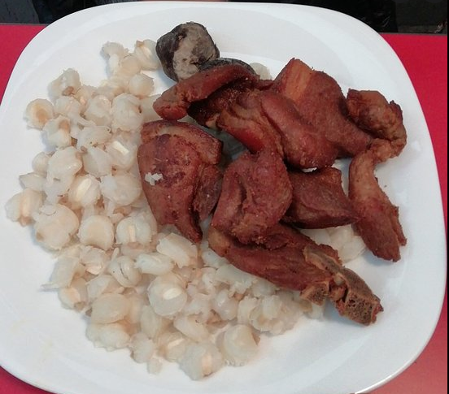

Chicharron

El Chicharron de Cerdo es un plato casi exclusivo de la region de los valles bolivianos, sobre todo por los ingredientes que utiliza.
Ingredientes
- 2 kg costilla de cerdo grande y carnosa
- 1 lb mote cocido
- ¾ lb maíz con cascara no cocida
- 1 lb chuño entero remojado y pelado
- 5 colas de cebolla
- 4 vainas de ají colorado
- 2 cucharas de ají colorado molido
- Sal
- Aceite
- 2 cucharillas de pimienta entera
- 2 cucharillas de comino entero
- 4 dientes de ajo
- 1 tomate sin cascara
- 5 locotos despepitados
- 3 ramitas de quirquiña
- 1 pizca de sal
Preparacion
- La noche anterior, lavar el maíz, remojar en bastante agua tibia. Al día siguiente, hacer cocer en su misma agua sin sal, hasta que se encuentre suave. El mote con cascara al terminar su cocimiento, no se revienta mucho.
- En batán moler al mismo tiempo, la pimienta, comino y ajo. Apane, las vainas del ají colorado lavarlas, despepitarlas y moler en un batán o licuadora, hasta obtener una salsa espesa.
- Cortar la costilla por la mitad, luego a lo ancho en pedazos de dos en dos y lavar. Sazonar cada presa sólo con la mitad de los condimentos y sal Dejar reposar durante15 minutos y hacer cocer en olla a presión en agua hirviendo, aumentar sal si fuera necesario. Habitualmente la carne de cerdo absorbe mucha sal.
- Una vez cocido el cuero, retirar a un recipiente, adobar cada presa con la otra mitad de los condimentos, el ají colorado y en un perol grande sin aceite, freír con su misma grasa, hasta que se encuentren bien tostadas. Si las costillas no contienen mucha grasa, agregar un poco de aceite y una vez caliente retostar, removiendo de vez en cuando de ambos lados hasta que se encuentren doradas o tapar el perol y sacudir un poco de rato en rato.
- En agua tibia hacer cocer los chuños con colas de cebolla, sal al gusto, previamente bien lavados varias veces. Retirar una vez se encuentren suaves.
- Acompañar las presas con el chuño, mote cocido y la llajua.
- Para la llajua, en un batán o licuadora, moler los locotos despepitados, el tomate sin cascara y la quinquiña previamente lavados, luego mezclar con la sal.